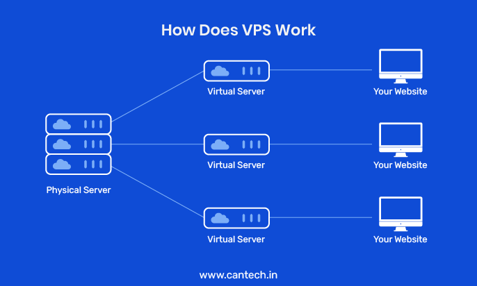

A VPS is a Virtual Machine that's in one big computer it's like spliting up a computer into multiple computers that anyone can access
A VPS treats a divided machine as if it's its own separate computer. This means that changes made by other users to their VPS won't affect yours.
Diagram image from https://www.cantech.in/blog/what-is-vps-hosting/
The diagram shows one powerful main computer being split into three (or more) separate parts using virtualization. Each part acts as its own independent server.
This allows multiple people to use the same physical machine to host websites or run other services, such as a VPN, without interfering with each other.
Each VPS runs its own operating system, similar to Ubuntu Server. Most providers give you full access to your specific VPS operating system.